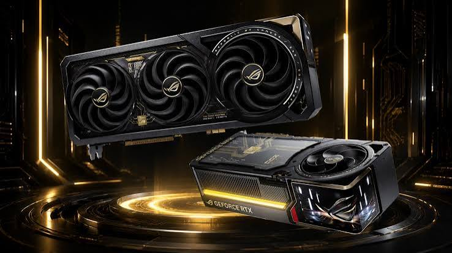

Ekran Kartı (GPU - Graphics Processing Unit) Nedir?

Ekrankartı Nedir?
Ekran Kartı, bilgisayardaki görsel verileri işleyen ve bunları monitörün anlayabileceği görüntü sinyallerine dönüştüren donanım birimidir. Özellikle üç boyutlu (3D) oyunlar, video düzenleme, yapay zeka hesaplamaları ve render (çizim) işlemlerinde merkezi işlemciden (CPU) bağımsız olarak devasa veri yüklerini paralel bir şekilde işler.

Ekran Kartının Temel Bileşenleri ve Görevleri
Grafik İşlemci Çipi
Ekran kartının ana beynidir. Binlerce küçük çekirdeğe sahip olup, paralel matematiksel hesaplamaları çok hızlı yapar.Video Belleği
Görüntü işlenirken kullanılan doku, kaplama ve kare (frame) verilerinin geçici olarak saklandığı ultra hızlı bellektir.Bellek Arayüzü
VRAM ile GPU arasındaki veri yolu genişliğidir. Ne kadar genişse, veri o kadar hızlı akar.Soğutma Sistemi
İşlem sırasında çok ısınan GPU ve VRAM çiplerini soğutarak kararlı çalışmayı sağlar.Güç Arayüzü
Güç kaynağından (PSU) gelen elektriği ekran kartına doğrudan iletir.Genişleme Arayüzü
Ekran kartının anakarta takıldığı ve sistemle veri alışverişi yaptığı ana yuvadır.Görüntü Çıkışları
İşlenen görüntü sinyallerini monitöre veya harici ekranlara aktaran portlardır.
Ekran Kartı Nasıl Çalışır?
- Veri Alımı: CPU, işlenecek oyun veya uygulama verilerini (geometri, nesneler, komutlar) PCIe yuvası üzerinden ekran kartına gönderir.
- Paralel İşleme (GPU Processing): GPU içerisindeki binlerce çekirdek, bu verileri (koordinatlar, renkler, ışıklandırmalar) aynı anda işleyerek piksellere dönüştürür.
- VRAM Depolama: İşlenen dokular ve anlık kareler VRAM üzerinde saklanır ve güncellenir.
- Görüntü Aktarımı: Son hazırlanan kareler, görüntü portları (HDMI/DisplayPort) aracılığıyla monitöre iletilir ve ekrana yansıtılır.